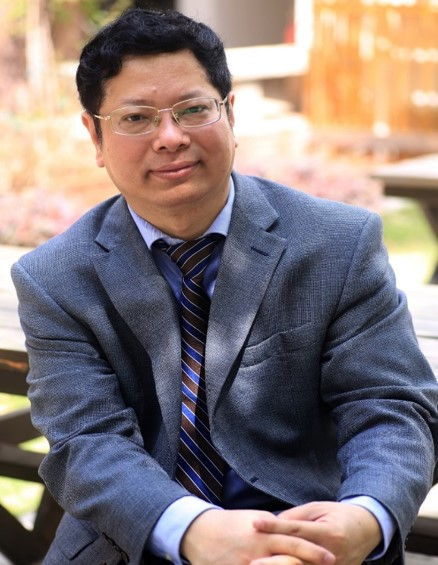

The University of Hong Kong, Hong Kong
| Home | Program | Venue & Direction | Accommodation |
|
HKU 2025 Summer Workshop on Statistics and Data Analytics |
This workshop is organized by the Statistics Group within the Innovation and Information Management Area of the HKU Business School.
We aim to bring together leading researchers in statistics and data science from around the world and the Greater Bay Area. We focus on promoting global and regional integration, fostering in-person interactions, and discussing cutting-edge research topics. We hope this workshop offers an open platform for participants to share insights in a collaborative environment to the advancement of statistics and data science.
Morning and afternoon sessions are located in the Jockey Club Tower, Centennial Campus, HKU. The Centennial Campus is an expansion of HKU main campus, providing an inspiring learning and communicating environment.
|
Invited Speakers |
(According to alphabetical order)
|
(Rutgers University) |
(New York University) |
(USC) |
|

(UCAS) |
(Emory University) |
(CUHK) |
|
Registration |
The registration deadline is tentatively set for May 30, but we may close registration earlier if the number of participants reaches the capacity of the venue.
Registration is free, but we still need registration in order to properly arrange the logistics and workshop space.
Please register HERE.
For invitation letter issues, please contact: xinghaoq@hku.hk
For other general consultation, please contact: lianh21@connect.hku.hk
|
Organizing Committee |
Prof. Xinghao Qiao (Committee Chair)
Prof. Dan Yang
Prof. Weichen Wang